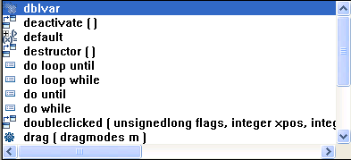
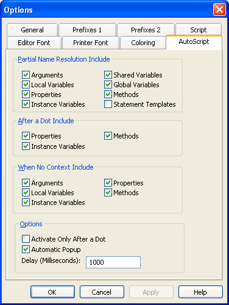

AutoScript is a tool designed to help you write PowerScript code more quickly by providing a lookup and paste service inside the Script view. It is an alternative to using the paste toolbar buttons or the Browser—you do not need to move your hands away from the keyboard to paste functions, events, variables, properties, and templates for PowerBuilder TRY, DO, FOR, IF, and CHOOSE statements into your script.
If you are not sure what the name or syntax of a function is or what the names of certain variables are, AutoScript can show you a list to choose from and paste what you need right into the script. If you can remember part of the name, start typing and select Edit>Activate AutoScript or press F8 (or do nothing if automatic pop-up is turned on). If you cannot remember the name at all, place your cursor in white space and press F8.
You can use AutoScript in three different contexts:
For how to use AutoScript options, see "Customizing AutoScript".
AutoScript can pop up a list automatically when you pause while typing, or when you request it:
For how to paste an item from the pop-up window into a script, see "Using the AutoScript pop-up window".
If there is more than one property, variable, method, or statement that could be inserted, AutoScript pops up an alphabetical list of possible completions or insertions. An icon next to each item indicates its type. The following screen includes an instance variable, events, properties, statements, and a function:

If a function is overloaded, each version displays on a different line in the AutoScript pop-up window.
If you have started typing a word, only completions that begin with the string you have already typed display in the list.
 Case sensitivity AutoScript always pastes lowercase characters, but the case
of any characters you have already typed is preserved. For example,
if you are using AutoScript to complete a function name and you
want to use mixed case, you can type up to the last uppercase letter
before invoking AutoScript. AutoScript completes the function name
and pastes an argument template.
Case sensitivity AutoScript always pastes lowercase characters, but the case
of any characters you have already typed is preserved. For example,
if you are using AutoScript to complete a function name and you
want to use mixed case, you can type up to the last uppercase letter
before invoking AutoScript. AutoScript completes the function name
and pastes an argument template.
To paste an item into the script, press Tab or Enter or double-click
the item. Use the arrow and page up and page down keys to scroll
through the list. If the item is a function, event, or statement,
the template that is pasted includes descriptive comments that you
replace with argument names, conditions, and so forth. The first
commented argument or statement is selected so that it is easy to
replace. You can jump to the next comment by selecting
Edit>Go
To>Next Marker.
 Go to next marker You can use Edit>Go To>Next Marker to jump
to the next comment enclosed by /* and */ anywhere
in the Script view, not just in AutoScript templates. For the steps
to create a shortcut for this menu item, see "Customizing AutoScript".
Go to next marker You can use Edit>Go To>Next Marker to jump
to the next comment enclosed by /* and */ anywhere
in the Script view, not just in AutoScript templates. For the steps
to create a shortcut for this menu item, see "Customizing AutoScript".
Press the Backspace key or click anywhere outside the pop-up window to dismiss it without pasting into the script.
AutoScript does not pop up a list if the cursor is in a comment or string literal or if an identifier is complete. If neither of these conditions applies and nothing displays when you press F8, there may be no appropriate completions in the current context. Check that the options you need are selected on the AutoScript options page as described in "Customizing AutoScript".
There are four ways to customize AutoScript:
AutoScript is easier to use if you create shortcuts for the menu items that you use frequently. The Edit>Activate AutoScript menu item uses F8 as a shortcut key by default, but you can change it if you prefer to use a different shortcut.
 To modify or create shortcut keys for using AutoScript:
To modify or create shortcut keys for using AutoScript:
Select Tools>Keyboard Shortcuts from the menu bar and expand the Edit menu in the Keyboard Shortcuts dialog box.
If you want to change the default key for activating AutoScript, scroll down and select Activate AutoScript and type a key sequence, such as Ctrl+Space.
Expand the Go To menu, select Next Marker, and type a key sequence, such as Ctrl+M.
After you click OK, the shortcuts display in the Edit menu.
To make the next three customizations, select Design>Options from the menu bar and select the AutoScript tab:

You can select different items to include in three different contexts:
Table 7-3 shows what is included in the list or pasted when you check each box.
Turning options off reduces the length of the list that displays when you invoke AutoScript so that it is faster and easier to paste a completion or insert code into the script:
 Using name completion shortens the list You might not need to clear boxes on the AutoScript page to
reduce the length of the list if you are using name completion and
F8 to invoke AutoScript. For example, suppose you have created an
instance called inv_ncst_dssrv of
the class n_cst_dssrv and
you know the function you want to use begins with of_g. Type
the following into a script and then press F8:
Using name completion shortens the list You might not need to clear boxes on the AutoScript page to
reduce the length of the list if you are using name completion and
F8 to invoke AutoScript. For example, suppose you have created an
instance called inv_ncst_dssrv of
the class n_cst_dssrv and
you know the function you want to use begins with of_g. Type
the following into a script and then press F8:
inv_ncst_dssrv.of_gAutoScript displays a pop-up window showing only the functions on n_cst_dssrv that begin with of_g.
Most of the time you will probably use a shortcut key to invoke AutoScript, but you can also have AutoScript pop up a list or paste a selection automatically whenever you pause for several seconds while typing. To do so, check the Automatic Popup box on the AutoScript options page. Automatic pop-up does not operate when the cursor is at the beginning of a line or in white space.
This feature is most useful when you are entering new code. You can customize the options in the Partial Name Resolution Include and After A Dot Include group boxes to reduce the number of times AutoScript pops up.
When you are editing existing code, it is easier to work with automatic pop-up off. AutoScript might pop up a list or paste a template for a function when you do not want it to. Using only the shortcut key to invoke AutoScript gives you complete control.
If you want AutoScript to work only when you have typed an identifier followed by a dot, check the Activate Only After a Dot box on the AutoScript options page. The effect of checking this box applies whether or not you have checked Automatic Popup. You might find it most useful when you have checked Automatic Popup, because it provides another way to limit the number of times AutoScript pops up automatically.
The following simple example illustrates how AutoScript works with automatic pop-up turned off and different settings for each context. To set up the example: